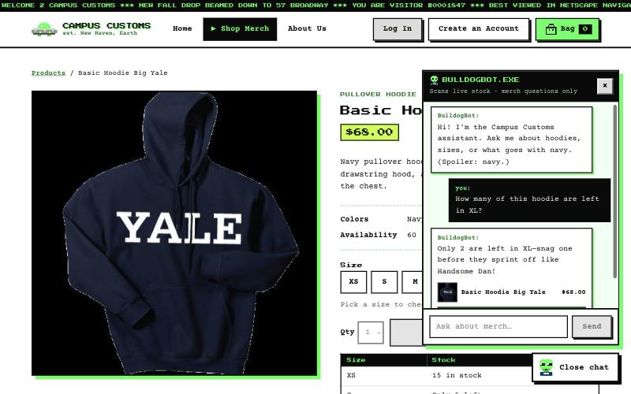
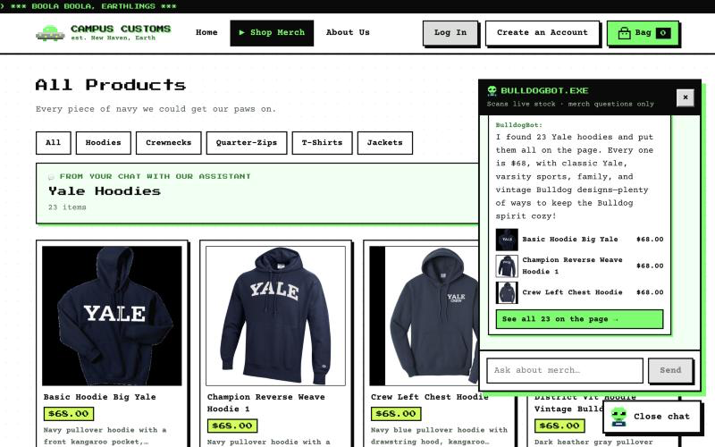
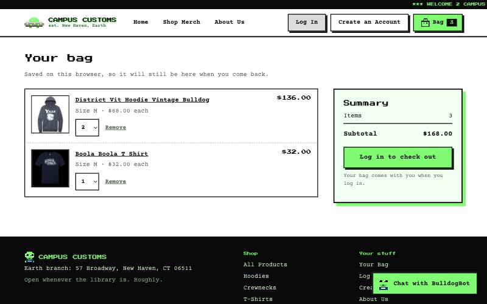

CHECK 1: Chat checks an item's inventory (honest stock from the DB)

inventory: Basic Hoodie Big Yale, size XL) has a quantity of exactly 2, and catalogue.price is $68.00.CHECK 2: Dynamic search result cards appear after a question

CHECK 3: Usability feature: saved shopping cart
